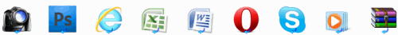
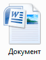

Компьютерные программы
В этом уроке мы поговорим про компьютерные программы – те иконки, которые находятся на Рабочем столе и в меню «Пуск». Далеко не все из них нам нужны, поэтому поговорим только о тех, которые могут пригодиться для работы и отдыха.
Я расскажу про наиболее популярные программы, которые встречаются на разных компьютерах с системой Windows. Поэтому, скорее всего, некоторых вы у себя не обнаружите.
Компьютерная программа (приложение) — это оболочка, которая запускает файлы. Обычно не только запускает, но еще и позволяет работать с ними: редактировать, создавать новые файлы.
Например, программа для работы с документами Microsoft Word. Она предназначена для печати текста. И в ней по умолчанию открываются все файлы такого типа: документы, статьи, рефераты и другие.
Получается, если такого приложения на компьютере нет, то и подобные файлы просто не откроются. А вот на другом компьютере, где оно есть, они будут запускаться.
Когда мы открываем файл, система Windows понимает, какой тип данных в нем находится. Она моментально подбирает подходящее приложение и запускает в нем этот файл.
Файлы, для которых система не может подобрать программу, выглядят так:

А те, для которых есть приложение, обозначены соответствующей иконкой.
Меню «Пуск»
«Пуск» - это кнопка, которая находится в самом низу экрана с левой стороны. Вот как она выглядит:

или

Если нажать на эту кнопку, появится небольшое прямоугольное окошко со списком различных значков и пунктов.
Возможно, меню «Пуск» на вашем компьютере будет выглядеть немного иначе.
Рассмотрим самые важные пункты меню:
- Компьютер (Этот компьютер) — самое важное место в компьютере. Через "Мой компьютер" открываются Локальные диски, CD и DVD диски, флешки, фотоаппараты и камеры.
- Документы, Музыка, Изображения — одни из немногих папок на ПК. Несмотря на то, что у этих папок кричащие названия, лучше не хранить в них важную информацию.
- Панель управления — настройка компьютера и устройств, подключенных к нему.
- Справка и поддержка — это что-то вроде учебника по компьютеру. Увы, слишком "заумный" этот учебник — по нему довольно сложно чему-то научиться.
- Найти программы и файлы (Поиск) — поможет найти программы, файлы или папки на компьютере, если Вы не помните, где именно они находятся.
- Завершение работы (Выключение) — правильное выключение компьютера.
- Устройства и принтеры (Принтеры и факсы) — настройка внешних устройств компьютер (принтера, факса, веб-камеры и т.д.).
- Программы – здесь находятся значки приложений, установленных на вашем компьютере. Подробнее о них мы поговорим далее.
Программы
Есть стандартные программы, а есть дополнительные. Стандартные — это те приложения, которые имеются на любом компьютере, а дополнительные — те, которые не входят в обычный набор, их устанавливают отдельно.
Поговорим сначала о стандартных:
- Internet Explorer — приложение, при помощи которого можно перемещаться по Интернету, то есть открывать сайты.
- Windows Media Player — проигрыватель музыкальных и видео файлов.
- Outlook Express — получение и отправление писем по электронной почте.
- Windows Movie Maker — программа для создания и редактирования видеозаписей.
- Игры — набор несложных компьютерных игр.
Пуск –› Программы –› Стандартные:
- WordPad — создание и редактирование текста (упрощенный MS Word).
- Блокнот — простейшее приложение для создания и редактирования текста. В ней можно только напечатать и сохранить без оформления.
- Калькулятор — думаю, понятно, что это.
- Paint — простой графический редактор, в котором можно рисовать и обрабатывать изображения.
- Звукозапись (Развлечения –› Звукозапись) — запись звука/голоса. Для того, чтобы ею пользоваться, должен быть микрофон.
- Специальные возможности – несколько простых и удобных приложений для людей с ограниченными возможностями.
- Записки - здесь можно делать пометки, фиксировать важные события. На экран как будто прикрепляется бумажка, на которой можно напечатать пометку-напоминалку.
- Ножницы - "фотографирование" экрана или его части (скриншот).
- Панель математического ввода - ввод математических формул.
А теперь разберемся с дополнительными программами. Это такие приложения, которых изначально нет в системе Windows, их устанавливают отдельно.
Пакет офисных приложений Microsoft Office:
- Microsoft Word — работа с текстом и документами. Самый известный и распространенный текстовый редактор.
- Microsoft Excel — вычисления, составление таблиц и диаграмм.
- Microsoft Access — создание, редактирование баз данных, обработка больших объемов информации.
- Microsoft Outlook — работа с электронной почтой.
- Microsoft PowerPoint — создание презентаций (визуального представления какой-либо информации).
Другие приложения:
- WinRaR (7-Zip, WinZip) — архиватор. Запаковывает и сжимает файлы.
- Winamp — проигрывает музыку и видео.
- K-Lite Codec Pack (Media Player Classic) — проигрывает музыку и видео.
- KMPLayer — проигрывает музыку и видео.
- ACDSee — показывает фото и рисунки.
- Kaspersky Anti-Virus, Dr.Web, Norton AntiVirus, Avast!, NOD32 или что-либо еще, в названии которого присутствует слово AntiVirus — защита от вирусов.
- Nero — запись CD и DVD дисков.
- Google Chrome, Opera, Mozilla Firefox, Yandex — программа, при помощи которой можно перемещаться по Интернету, то есть открывать сайты. То же самое, что и Internet Explorer, только лучше.
- Adobe Photoshop — работа с компьютерной графикой, обработка фото и картинок.
- Skype - голосовые и видео звонки по Интернету, переписка.
Как программы попадают в компьютер
Как программы попадают в компьютер Чтобы программа появилась в компьютере, ее нужно туда установить. В Windows 10 многие приложения есть в Магазине. Для установки достаточно зайти в «Пуск» → «Microsoft Store» и через него загрузить нужное.
Обычно после этого в кнопке «Пуск» появляется только что установленное приложение. Им сразу же можно начинать пользоваться.
Но большинство программ (в том числе драйверы) устанавливаются по-другому:
- Открываем файл установки.
- Следуем инструкции в окошке.
- Ждем, пока все файлы закачаются в систему.
На заметку. Игры устанавливаются по такому же принципу: запускаем файл и ждем, пока игра добавится в компьютер.
Где скачать
У каждой программы есть официальный сайт. Это адрес в интернете, где разработчики выкладывают информацию, новости и другие данные. И обычно с этого сайта можно скачать файл установки.
Кроме официального сайта, есть еще много других адресов, где можно скачать это же самое приложение. Но я не советую этого делать, так как вместе с ним можно получить вирус.
Как найти официальный сайт:
1. Открываем Яндекс (yandex.ru). В поисковой строке печатаем название приложения и нажимаем «Найти».
2. Обычно самый первый результат – это и есть официальный сайт. Часто он называется так же, как программа, и отмечен специальным значком.

Если вы не уверены, что сайт официальный, найдите в списке результатов Википедию.

На странице из Википедии будет указан официальный сайт.

Как скачать файл установки:
На официальном сайте должна быть кнопка или ссылка для скачивания. Если ее нет на главной странице, то нужно перейти в раздел «Скачать», «Загрузить», «Download» или с похожим названием.
Нажимаем на ссылку и установочный файл сразу же закачивается.
Если после нажатия на ссылку открылось дополнительное окошко, значит, в нем нужно выбрать место в компьютере, куда закачается файл. Например, папку «Загрузки». А затем нажать «Сохранить».
После окончания скачивания файл будет находиться в папке «Загрузки».
Важно! Скачивайте приложения только с официальных сайтов, иначе вы рискуете получить вирус.
Как установить
Несмотря на то, что программ много, устанавливаются они примерно одинаково. Принцип следующий: запускаем файл установки и следуем инструкции. Обычно нужно просто нажимать «Далее» или «Next».
Покажу на примере OpenOfiice. Вам это приложение закачивать не нужно – просто посмотрите на сам процесс установки.
Каждый этап показан на картинке. Для перемещения между ними пользуйтесь стрелками. Для увеличения картинки щелкните по ней.


После установки на Рабочем столе и/или в кнопке «Пуск» появится значок для запуска.
На заметку. Есть такие версии, которые устанавливать не нужно. Они называются Portable. В таком случае достаточно просто запустить файл и приложение откроется. Это удобно – ведь подобную программу можно запустить на чужом компьютере даже с флешки.